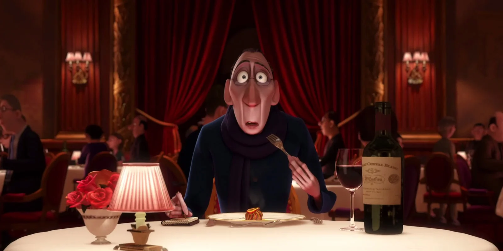

About Anton
Ego is an imperious and acerbic food critic, whose reviews can make or break a restaurant.Ego is extremely passionate about food, claiming, "I don't like food, I love it," and claims to refuse to swallow food that he doesn't like, which explains why he's so thin.
Anton Ego himself
Ego's characteristics:
- He is a man of great taste and distinction, showing a knowledge of fine wines as well as food.
- Ego is intelligent and sophisticated and in terms of dress sense, he appears to be something of a dandy, completing his dark, dapper suit with a chic scarf.
- Ego is extremely passionate about food, claiming, "I don't like food, I love it," and claims to refuse to swallow food that he doesn't like, which explains why he's so thin.
Anton Ego the food critic
Ego's appearance was modeled after Louis Jouvet. He interacted with different characters in the film. Click on the links below to read more about them: